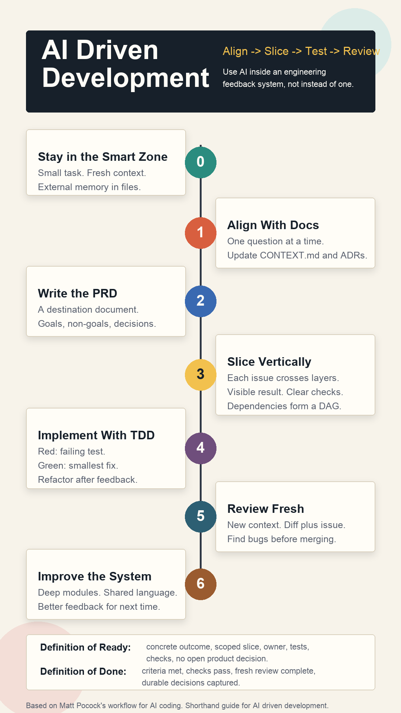

AI Driven Development Workflow Guide
A practical workflow for using AI inside an engineering feedback system, not instead of one.

Based on Matt Pocock's "Full Walkthrough: Workflow for AI Coding," his follow-up on /grill-with-docs, and related public materials.
Core Idea
AI driven development works best when you stop treating the model as an infinite-context programmer and start treating it as a fast junior engineer inside a tight engineering system.
- Keep the model in a small, high-quality context.
- Align on the design before implementation.
- Maintain shared project language while aligning.
- Externalize memory into docs, issues, tests, and code.
- Slice work vertically so every task produces feedback.
- Let agents implement only after the work is clear.
- Review in a fresh context.
- Improve the codebase so the next agent has an easier job.
The Operating Principles
1. Stay in the Smart Zone
Large context windows do not mean unlimited coding quality. As the context fills, models tend to lose precision, miss constraints, and make worse decisions.
Working pattern:
- Keep each task small enough to fit in a fresh session.
- Prefer short, complete issue files over sprawling chat history.
- Clear context between major phases when possible.
- Move important state into external artifacts: PRDs, issues, tests, ADRs, and code comments.
- Use subagents or separate sessions for research so their raw exploration does not pollute the main context.
2. Treat the Model as Forgetful
Assume the agent will forget anything not written down. This is not a defect to fight with more chat history; it is a design constraint.
Working pattern:
- Keep durable decisions in files.
- Give every new agent a compact, current entry point.
- Avoid relying on "we discussed this earlier."
- Prefer a clean restart plus good artifacts over a long compacted conversation.
Good project memory includes:
CONTEXT.mdfor domain language, bounded contexts, and non-obvious project concepts.- ADRs for hard-to-reverse or surprising architecture choices.
- PRDs for destination-level product intent.
- Issue files for implementation-ready slices.
- Tests for executable expectations.
3. Alignment Beats Specs-to-Code
The talk argues against handing a large spec to an agent and treating the generated code as an implementation detail. The code still matters. You need to understand it, shape it, and review it.
Working pattern:
- Do not start with "build this."
- Start with "interview me until the design is clear."
- In an existing codebase, make the interview update shared language and ADRs as decisions emerge.
- Let the agent uncover missing decisions, edge cases, dependency choices, and product boundaries.
- Only move to implementation after the design has been pressure-tested.
Phase 1: Align With Docs
Use an alignment session before writing code. The agent's job is to ask one focused question at a time until both of you share the same design concept.
The update from Matt's newer /grill-with-docs workflow is this: for coding work in an existing project, alignment should not live only in chat. It should also refine the project's shared language and capture non-obvious decisions while the conversation is still fresh.
Choose the Right Alignment Mode
Use /grill-me when:
- The task is greenfield or mostly product exploration.
- There is no meaningful project glossary yet.
- You need zero setup.
- You are using the pattern outside coding.
Use /grill-with-docs when:
- The work touches an existing codebase.
- The project has domain terms, established concepts, or team language.
- The agent keeps being verbose because it does not know the right nouns.
- You want the session to update
CONTEXT.mdand create ADRs for durable decisions.
In short: /grill-me extracts clarity from your head. /grill-with-docs extracts clarity and makes it stick in the project.
Prompt Template
For a new or lightweight task:
Interview me relentlessly about this feature until we reach a shared understanding.
Walk down each branch of the design tree and resolve dependencies between decisions one by one.
Ask one question at a time.
For each question, provide your recommended answer and why.
If the answer can be discovered from the codebase, inspect the code instead of asking me.
Feature:
[describe the feature or problem]For an existing codebase:
Interview me relentlessly about this feature until we reach a shared understanding.
Use the existing codebase, CONTEXT.md, and docs/adr as grounding.
Challenge fuzzy or inconsistent terminology against the project language.
Ask one question at a time.
For each question, provide your recommended answer and why.
If the answer can be discovered from the codebase or docs, inspect them instead of asking me.
While we align:
- Update CONTEXT.md when we define or refine project language.
- Propose an ADR only for decisions that are hard to reverse, surprising, or involve a real tradeoff.
- Keep implementation out of scope until alignment is complete.
Feature:
[describe the feature or problem]What the Agent Should Clarify
- User goal and success criteria.
- In-scope and out-of-scope behavior.
- Existing vocabulary and whether the feature needs new terms.
- Data model and lifecycle.
- Edge cases and failure modes.
- Security, privacy, and permissions.
- Backwards compatibility and migration needs.
- UI states and empty/error/loading states.
- Test strategy and verification commands.
- Existing modules that should own the behavior.
- Whether a durable architecture decision should be captured as an ADR.
Human Role
Your job is not to answer everything perfectly. Your job is to make product and architecture decisions the agent cannot safely infer.
End this phase when:
- The agent stops surfacing surprising unresolved questions.
- You can describe the feature in one or two crisp sentences.
- The risky decisions are explicit.
- You know what is out of scope.
- Any new shared language or ADR-worthy decisions have been captured.
Lightweight CONTEXT.md Template
# Context
## Bounded Context
[What part of the system this language applies to.]
## Shared Terms
- Term: Meaning. Where it appears in code.
## Important Workflows
- [Workflow name]: [short explanation]
## Naming Conventions
- [How concepts should be named in files, variables, UI, and docs.]
## Common Misunderstandings
- [Term or behavior agents often get wrong.]ADR Trigger
Create an ADR only when a decision:
- Is hard to reverse.
- Would surprise a future maintainer.
- Has real tradeoffs or long-term consequences.
- Explains why the obvious alternative was rejected.
Phase 2: Write the PRD as a Destination Document
After the alignment session, turn the conversation into a PRD. The PRD is not a magic input that generates correct code. It is a durable destination document so future fresh sessions know what "done" means.
If you used /grill-with-docs, the PRD should reference the updated project language instead of redefining everything. CONTEXT.md explains the nouns; the PRD explains the destination for this feature.
PRD Template
# PRD: [Feature Name]
## Problem
[What user or business problem are we solving?]
## Goals
- [Goal 1]
- [Goal 2]
## Non-Goals
- [Explicitly excluded behavior]
## User Stories
- As a [user], I want [capability], so that [outcome].
## Product Decisions
- [Decision and rationale]
## Technical Decisions
- [Module ownership]
- [Data model changes]
- [API or interface changes]
- [Migration strategy]
## UX States
- Empty:
- Loading:
- Success:
- Error:
- Permission denied:
## Test Strategy
- Unit:
- Integration:
- E2E/manual:
## Open Questions
- [Only unresolved items that should block or constrain implementation]Review the PRD for risk, not prose. The valuable review already happened during grilling. Now check that the artifact captured the important decisions.
Phase 3: Break the PRD Into Vertical Slice Issues
Agents often default to horizontal work: database first, API second, UI third. That delays feedback. Prefer vertical slices: each issue cuts through the necessary layers and leaves a visible, testable result.
Bad Horizontal Issues
- Add all database tables.
- Add all API endpoints.
- Build all UI screens.
- Wire everything together.
Better Vertical Issues
- Award points when a lesson is completed and show the new total on the dashboard.
- Display an empty leaderboard state for users with no points.
- Backfill points for historical completions and expose the migration result in admin logs.
Issue Template
# Issue: [Vertical Slice Name]
## Outcome
[One visible or verifiable behavior this issue must deliver.]
## User Value
[Why this slice matters.]
## Scope
- [Specific changes included]
## Out of Scope
- [What the agent must not do]
## Expected Files or Modules
- [Likely files/modules, if known]
## Dependencies
- Blocks: [issues this enables]
- Blocked by: [issues required first]
## Test Requirements
- Write or update failing tests first.
- Run: [test command]
- Run: [typecheck/lint/build command]
## Acceptance Criteria
- [ ] [Observable behavior]
- [ ] [Tests pass]
- [ ] [No unrelated refactors]
- [ ] [Docs updated if needed]Good issues are independently grabbable. If two issues do not share a dependency, separate agents should be able to work on them in parallel.
Phase 4: Implement With TDD
Once issues are clear, implementation can become more autonomous. Keep the agent inside a red-green-refactor loop.
Implementation Prompt Template
Implement this issue using red-green-refactor.
Rules:
- First inspect the relevant code and tests.
- Write a failing test for the desired behavior.
- Run the test and confirm it fails for the expected reason.
- Implement the smallest change that makes the test pass.
- Refactor only after the test passes.
- Run the full required verification commands.
- Do not make unrelated changes.
- Summarize the files changed, tests run, and remaining risks.
Issue:
[paste issue]Why TDD Matters More With Agents
Tests are not ceremony here. They are the agent's steering system. Without executable feedback, the agent is guessing.
Minimum feedback loop:
- A focused failing test.
- Typecheck.
- Lint or formatting if the repo uses it.
- Existing regression tests for nearby behavior.
- Manual QA or screenshots for frontend-heavy work.
Phase 5: Review in a Fresh Context
Do not let the same long-running implementation context be the only reviewer. The implementer is already carrying its own assumptions.
Working pattern:
- Start a fresh session for review.
- Give it the issue, PRD excerpt, diff, and verification output.
- Ask it to find bugs, missing tests, architectural drift, and unrelated changes.
- Use a stronger model for review if available.
- Treat AI-generated code as untrusted until reviewed.
Review Prompt Template
Review this change as a senior engineer.
Prioritize:
- Behavioral bugs.
- Missed acceptance criteria.
- Missing or weak tests.
- Security or data integrity risks.
- Unrelated changes.
- Architecture drift.
Inputs:
- Issue: [paste]
- Relevant PRD section: [paste]
- Diff: [paste or point to branch]
- Test output: [paste]
Return findings first, ordered by severity, with file and line references where possible.Phase 6: Use a Kanban/DAG for Agent Work
The useful planning artifact is not just a list. It is a dependency graph.
Suggested Columns
Backlog: captured but not ready.Ready: clear, vertical, unblocked, testable.In Progress: one agent per issue.Review: implementation complete, fresh review pending.Needs Human: blocked by product or architecture judgment.Done: merged and verified.
Rules
- Only
Readyissues may be picked up by agents. - Every
Readyissue has acceptance criteria and verification commands. - Blocked issues name their dependency.
- Parallel agents work only on independent slices.
- Human reviews merges, architecture, and product tradeoffs.
Phase 7: Architecture Is the Quality Ceiling
Agents perform better in codebases with deep modules: small interfaces hiding meaningful internal complexity. They perform worse in shallow, tangled systems where every change crosses many tiny files and ambiguous dependencies.
Working pattern:
- Prefer cohesive modules with clear ownership.
- Keep public interfaces small.
- Put complexity behind testable boundaries.
- Consolidate scattered logic when repeated agent mistakes reveal a weak module boundary.
- Add project language docs so agents use the same nouns as the team and codebase.
Architecture Review Questions
- Where did the agent have to touch too many files?
- Which concepts were named inconsistently?
- Which tests were hard to write?
- Which behavior had no obvious owning module?
- Which instructions had to be repeated because the codebase did not make them obvious?
A Practical Daily Workflow
For a New Feature
- Start a fresh context.
- Choose
/grill-mefor greenfield work or/grill-with-docsfor existing code. - Align one question at a time.
- Update
CONTEXT.mdand ADRs during alignment when needed. - Write/update PRD.
- Convert PRD into vertical issues.
- Mark dependencies.
- Let agents implement ready issues with TDD.
- Review each change in a fresh context.
- Merge small slices.
- Capture architecture improvement opportunities.
For a Bug
- Ask the agent to reproduce and explain the bug.
- Write a failing regression test.
- Fix the smallest owning module.
- Run focused and broad verification.
- Fresh-context review.
- Add an ADR or docs update only if the root cause was conceptual.
For a Refactor
- Ask the agent to map current behavior and module boundaries.
- Identify the smallest deepening opportunity.
- Lock behavior with tests.
- Refactor behind the same interface.
- Run broad verification.
- Review for behavior changes and unnecessary churn.
Definition of Ready
An issue is ready for an agent when:
- The outcome is concrete.
- Scope and non-scope are explicit.
- The likely owning module is identified.
- Dependencies are known.
- There is a test strategy.
- Verification commands are listed.
- The issue can be completed without another product decision.
Definition of Done
A slice is done when:
- Acceptance criteria are met.
- Tests were added or updated where appropriate.
- Required checks pass.
- The diff is small enough to review.
- The implementation was reviewed from fresh context.
- Any new durable decisions are documented.
- The issue is merged or ready for human merge.
Anti-Patterns to Avoid
- Asking the agent to "build the whole feature" from a vague brief.
- Letting one chat run forever through planning, implementation, debugging, and review.
- Treating PRDs as code generators instead of alignment artifacts.
- Creating horizontal issues that delay feedback.
- Running agents without tests, typechecks, or manual QA.
- Reviewing agent output in the same context that produced it.
- Using frameworks or orchestration tools you do not understand well enough to debug.
- Allowing generated code volume to exceed review capacity.
Minimal Version You Can Use Today
You do not need a full agent orchestration stack to adopt the pattern.
Start with this:
- Before coding, ask the agent to align with you one question at a time.
- For existing codebases, keep a short
CONTEXT.mdand update it when new project language appears. - Save feature-specific decisions in a short PRD.
- Split the PRD into vertical issues.
- For each issue, require a failing test before implementation.
- Clear context before review.
- Keep only small, reviewed changes.
Sources
- YouTube: Full Walkthrough: Workflow for AI Coding - Matt Pocock
- YouTube: I stopped using /grill-me for coding. Here's what I use instead - Matt Pocock
- TalksIntel timestamped summary
- Podwise episode summary
- Matt Pocock skills repository
- Matt Pocock on grill-with-docs/shared language
- Sandcastle repository